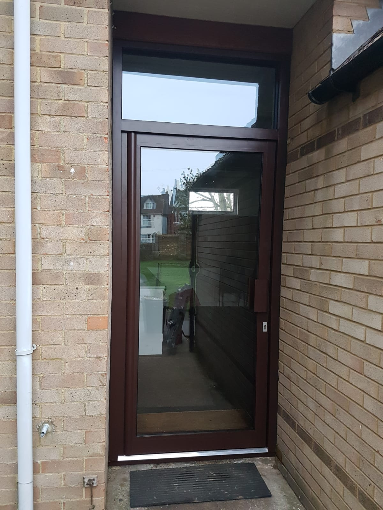
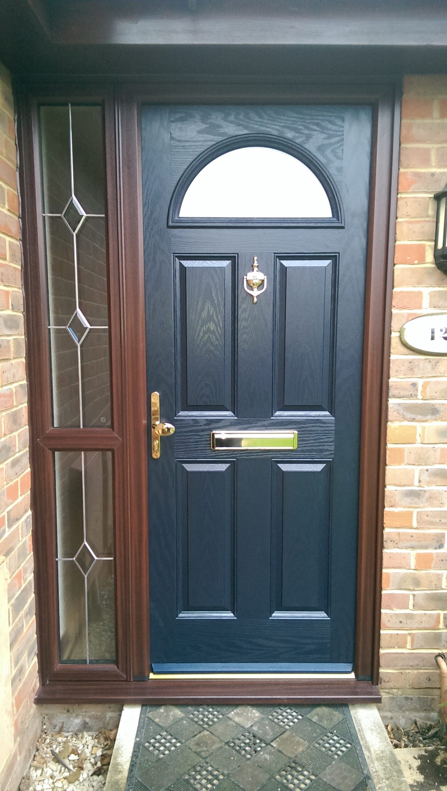
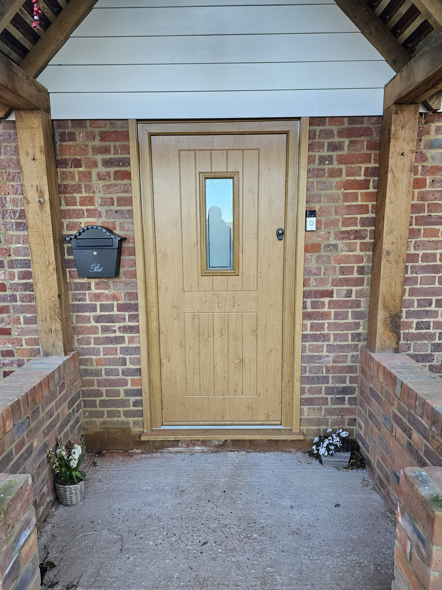
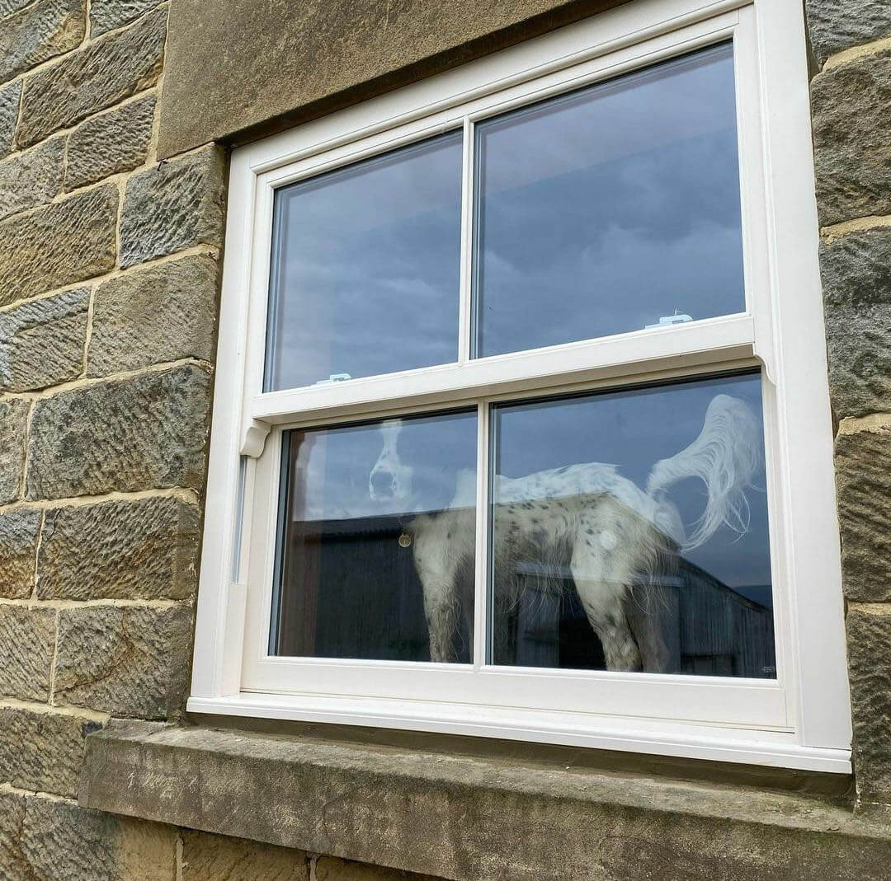
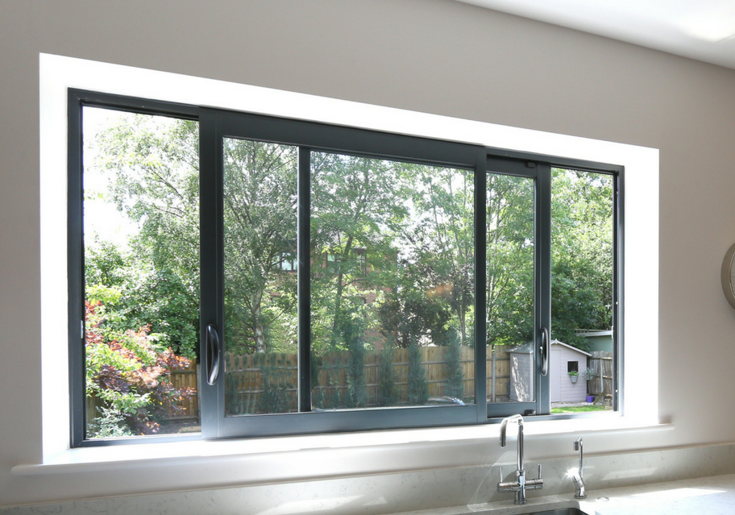
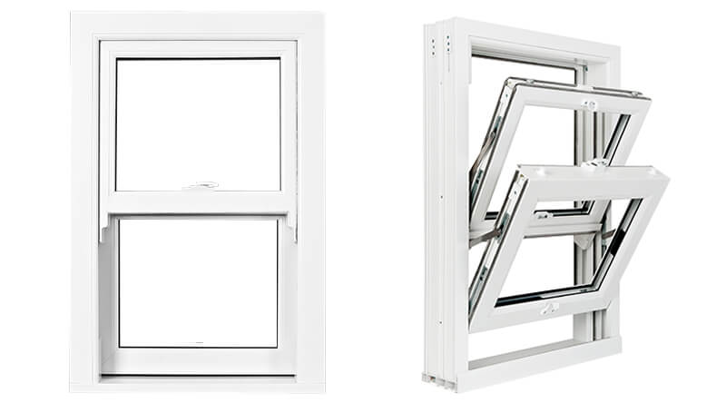
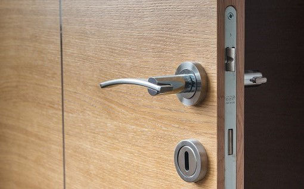

At LIONPRO Doors and Windows, we are proud to offer our professional services across multiple cities in the York region. Whether you're looking to install new doors and windows or need repair services, our team is here to help you enhance your home's style and security.
Alliston
Angus
Aurora
Barrie
Beeton
Bradford
Coldwater
Collingwood
Cookstown
East Gwillimbury
Delmvale
Innisfil
Keswick
King
Midland
Newmarket
Orillia
Doro
Tettenham
Wasaga Beach
Professional Windows and Doors Services
Front Door Installation



Welcome visitors to your home with a durable, stylish, and secure front door from LIONPRO. Our front door installation in is designed to impress at first sight while offering exceptional protection and energy efficiency. We combine modern design trends with classic craftsmanship to create doors that not only enhance your curb appeal but also stand the test of time.
At LIONPRO, we understand that your front door is the centerpiece of your home’s entryway. That’s why our team of experts meticulously selects the finest materials and innovative hardware to deliver a product that exudes quality and sophistication. Our passion for excellence ensures that each door installation in is executed with precision and attention to detail.
Whether you’re looking for a sleek, contemporary door or a timeless traditional design, our diverse range of custom doors has something for every style. We offer personalized consultations to ensure that your chosen door perfectly matches your home’s aesthetic and functional needs. Trust our door experts to guide you through every step of the process.
Our commitment to quality is further demonstrated by our rigorous testing and commitment to energy efficiency. Each front door is built to withstand harsh weather conditions while providing optimal insulation and security. With LIONPRO, you receive a product that is as reliable as it is beautiful, ensuring your investment stands strong for years to come.
We believe that a great front door creates a lasting impression and sets the tone for your entire home. Experience the ultimate blend of style, performance, and durability with our premium door installation services in. Our dedication to excellence makes us the top choice for homeowners seeking quality windows and doors.
Ready to transform your entryway? Looking to upgrade your windows too? Visit our window showroom to explore energy-efficient sliding windows and discover innovative replacement options that complement your new front door.
Sliding windows



Transform your living space with our sleek, modern sliding windows in that bring in natural light and energy efficiency. Our sliding windows are designed to deliver smooth operation, elegant aesthetics, and robust performance for any room in your home. We pay attention to every detail, ensuring each window not only functions perfectly but also elevates the overall design of your space.
Every sliding window we install in is engineered with precision and built using high-quality materials that stand up to daily wear and tear. Enjoy the benefits of reduced energy costs and increased home value as our windows provide superior insulation and sound reduction. Our products are a perfect fusion of innovative technology and artistic design.
Our dedicated team of window experts is committed to understanding your unique needs and preferences. We offer personalized advice and thorough consultations so that you can select the perfect style, size, and finish for your home. With a wide product range that includes classic and contemporary designs, we ensure your project reflects your personal taste and lifestyle.
At LIONPRO, we go above and beyond to ensure every installation is completed with the utmost professionalism and care. Our service doesn’t stop at installation; we provide ongoing maintenance tips and repair services to keep your windows in peak condition. Our reputation for quality windows in is built on years of trust and customer satisfaction.
With our focus on energy efficiency, our sliding windows help reduce your home’s carbon footprint while offering impressive thermal performance. Whether you are replacing old windows or adding new ones during a renovation, our innovative solutions promise both aesthetic appeal and functional excellence.
Need to refresh your home’s entrance? Explore our front door installation services in to see how our integrated approach to windows and doors can transform your home. Experience the superior quality and creativity that only LIONPRO can deliver.
Interior Door repair

Is your home’s interior in need of a refresh? Our interior door repair services in provide a seamless solution to bring back the original charm and functionality of your doors. We specialize in repairing a wide range of issues—from minor adjustments and squeaks to more complex structural problems—ensuring that every repair restores both beauty and efficiency.
At LIONPRO, we take pride in our attention to detail and commitment to quality. Our experienced technicians use advanced tools and top-tier materials to mend every door with precision. This dedication to excellence ensures that your interior door repairs are not only quick and reliable but also enhance the overall look of your home.
Our approach is thorough and customer-focused; we take the time to diagnose the problem and recommend a solution tailored to your specific needs. We believe that a well-functioning door is an essential part of your home’s comfort and style, and we strive to exceed your expectations with every repair we complete.
We also offer comprehensive consultations to help you decide whether a repair or a full replacement is the best option for your home improvement project. By understanding the nuances of your space, our door experts in Simcoe County provide solutions that add value and maintain the aesthetic integrity of your home.
Our interior door repair services are built on a foundation of trust and reliability. With years of experience serving homeowners, we have refined our techniques to deliver repairs that last. Our goal is to restore your door’s functionality and beauty, ensuring your home remains as inviting as ever.
Interested in enhancing your home’s overall appeal? Discover our sliding window services in to complement your newly repaired interior doors with high-quality windows that offer both style and performance.
Door bell repair
Ensure that every visitor is greeted properly with our reliable doorbell repair services in. A fully functioning doorbell is not just a convenience—it’s an essential part of your home’s security and communication system. At LIONPRO, we understand the importance of a doorbell that works flawlessly at all times.
Our technicians are adept at diagnosing and fixing any issue related to doorbell malfunctions. Whether it’s a wiring problem, a faulty chime, or issues with the doorbell button itself, we apply creative and effective solutions to restore full functionality. With our expertise, you can be confident that your doorbell will reliably signal every visitor.
We combine technical skill with a passion for customer satisfaction to ensure that our doorbell repairs exceed expectations. Every repair is executed with precision, ensuring minimal disruption and lasting results. Our approach is both innovative and thorough, making us the trusted choice for doorbell repair services in.
With an eye for detail, we also check related components to guarantee that your entire entry system is secure and efficient. Our goal is to provide a seamless service experience that leaves you with a fully operational and aesthetically pleasing doorbell system.
The reliability of your doorbell reflects your commitment to home security and convenience. At LIONPRO, we are dedicated to delivering premium customer service, ensuring that every repair is performed with care and attention to detail. Our reputation as experts in door repairs is built on our consistent performance and customer trust.
For a more secure home, ensure full protection by exploring our other security services. Learn about our secure door lock repair services in and discover how we can elevate your home’s overall security system.
Door lock repair
Your safety and peace of mind are paramount. With our secure door lock repair services in, we provide you with the assurance that your home or business is safeguarded against unwanted entry. Every repair is handled by our team of experienced professionals who are dedicated to delivering robust and reliable security solutions.
At LIONPRO, our approach to door lock repair goes beyond simply fixing a problem. We assess the integrity of your entire locking system to ensure that every component functions at its best. Our attention to detail and commitment to quality ensure that your lock not only works but does so consistently under all conditions.
We employ advanced repair techniques and use only high-quality materials, ensuring that our door lock repairs stand up to daily use. By combining technology with traditional craftsmanship, we offer a level of security that is both modern and timeless. Trust our door experts in Simcoe County to deliver repairs that reinforce the safety of your property.
Our commitment to competitive pricing and exceptional customer service means you get the best value for your investment. With a focus on long-lasting solutions, our team ensures that every repair improves the overall security and functionality of your locks. We are dedicated to protecting what matters most to you.
We believe that every home and business deserves a lock system that is both aesthetically pleasing and functionally superior. Our door lock repair services in are designed to blend seamlessly with your existing decor while providing unmatched protection. Experience the peace of mind that comes from knowing your property is secure.
Ready to upgrade your security? Protect your business with robust solutions. Explore our commercial door repair services in and let our expert team secure your property from potential threats.
Steel door repair
For homeowners who demand the ultimate in strength and durability, our steel door repair services in are the ideal choice. We understand that steel doors are not only about security but also about making a bold design statement. Our repairs focus on restoring the original resilience and aesthetic appeal of your steel doors.
Every repair is executed by seasoned professionals who have extensive experience working with heavy-duty materials. We ensure that every weld, hinge, and locking mechanism is inspected and repaired to the highest standard, so your steel door remains as reliable as it is attractive.
Our creative approach to steel door repair means we tailor our solutions to your specific needs. Whether it’s a cosmetic fix or a structural repair, we apply our expertise to extend the lifespan of your door and maintain its visual appeal. You can trust LIONPRO to handle every repair with professionalism and care.
The quality of our workmanship is reflected in the enduring performance of our repaired doors. We understand that a steel door is a long-term investment in your home’s security and curb appeal. That is why we go the extra mile to ensure that every repair enhances both the functionality and beauty of your entryway.
Our commitment to using premium materials and advanced repair techniques means that your steel door will perform optimally for years to come. Let our team help you safeguard your home with repairs that combine modern technology with timeless craftsmanship.
Discover the perfect balance between strength and design with our steel door repair services in. Experience the artistry and precision that sets us apart from the competition, and see why so many homeowners trust us for their custom door needs.
Residential door repair
Enhance the beauty, security, and functionality of your home with our comprehensive residential door repair services in. Our experienced team is dedicated to reviving your interior and exterior doors, ensuring that every repair not only restores performance but also elevates your home’s overall aesthetic.
We understand that every door tells a story about your home’s character. That’s why our repair services focus on preserving the original charm while incorporating modern techniques for long-lasting durability. Our commitment to excellence is evident in every project, no matter how big or small.
From squeaky hinges to misaligned frames and damaged panels, we address all issues with precision and care. Our door repair solutions are designed to maintain the unique style of your home, whether you prefer a classic, rustic look or a sleek, modern design. We work diligently to ensure your doors perform flawlessly while looking impeccable.
Our team takes the time to understand your specific needs and provide personalized recommendations, ensuring that every repair is tailored to your home improvement goals. With years of experience serving residents, we have built a reputation for reliability, craftsmanship, and attention to detail.
We also offer door replacement services for situations where repair might not be sufficient, ensuring that you have access to the highest quality solutions available. Our aim is to help you create a home environment that is both welcoming and secure, backed by our unwavering commitment to customer satisfaction.
Running a business in demands dependable and robust door solutions. Our commercial door repair services are tailored to meet the unique challenges of high-traffic environments, ensuring that your storefront or office doors are always in peak condition. We know that first impressions matter, and a well-maintained door is essential to your business’s success.
At LIONPRO, we work with business owners to deliver repair solutions that minimize downtime and maintain security. Our experienced technicians are equipped to handle everything from minor repairs to major overhauls, ensuring that your commercial doors operate smoothly and safely day in and day out.
Our comprehensive approach means we assess every aspect of your door system—from the hardware to the structural components—to provide a repair that meets the rigorous demands of commercial use. We strive for excellence in every repair, ensuring that your business environment remains professional, secure, and inviting.
With a strong focus on customer satisfaction, we provide detailed consultations and transparent pricing to help you make informed decisions about your repair needs. Our solutions are designed to offer lasting performance and unmatched durability, making us the trusted door experts in for commercial projects.
Our commercial repair services reflect our commitment to quality, combining state-of-the-art techniques with years of industry experience. We understand the critical role that secure and functional doors play in the daily operations of your business, and we work tirelessly to ensure your complete satisfaction.
Discover the perfect balance between elegance and strength with our fiberglass door repair services in. Fiberglass doors offer a modern aesthetic and superior durability, and our expert repair services ensure that they continue to perform at their best. We take pride in restoring the pristine condition of your doors while preserving their unique style.
Our skilled technicians approach each repair with creativity and precision, addressing issues from surface damage to structural concerns. By using state-of-the-art tools and high-quality materials, we ensure that every repair meets our stringent standards for durability and beauty. Your fiberglass doors will not only look impressive but also provide enhanced insulation and security.
With years of experience and a commitment to customer satisfaction, we tailor our services to meet your individual needs. Whether you require a quick fix or a comprehensive restoration, our team is dedicated to delivering solutions that add value to your home. We understand the importance of maintaining the aesthetic appeal of your property while ensuring that every repair stands the test of time.
Our service is designed to exceed your expectations, combining functionality with artistic design. We believe that every repair should enhance the overall look and performance of your doors, making them a lasting asset to your home. Trust LIONPRO to provide creative, reliable, and professional fiberglass door repair services in.
We invite you to experience the transformation that comes with our expert repairs. Every detail matters, from the initial consultation to the final installation, and our team is committed to delivering excellence at every step. Your satisfaction is our priority, and we work tirelessly to ensure your doors reflect the beauty and strength of your home.
Combining strength with elegance, our fiberglass door repair services are ideal for both modern and traditional homes. See how we can help transform your space and add a touch of sophistication and resilience to your home’s entrance.
Storefront door repair
Your storefront is the face of your business, and its appearance is critical to attracting customers. Our storefront door repair services in are designed to ensure that your entryways are not only secure and functional but also exude a professional and inviting appearance. We understand that a well-maintained storefront sets the tone for your brand.
At LIONPRO, our team of experts uses innovative repair techniques to restore the beauty and performance of your storefront doors. We handle every detail—from repairing dents and scratches to restoring the locking mechanisms—to create a welcoming entry that impresses every visitor.
Our comprehensive repair services are tailored to meet the unique needs of commercial properties. With an emphasis on durability and aesthetic appeal, we work diligently to ensure that your storefront not only meets regulatory standards but also enhances your business’s curb appeal. Our experienced technicians are dedicated to delivering lasting results that you can depend on.
We combine modern technology with time-tested craftsmanship to address all aspects of storefront door repair. Our commitment to quality ensures that every repair is executed with precision, providing you with a secure and attractive entryway that reflects the values of your business.
With competitive pricing and a focus on premium customer service, LIONPRO stands out as the trusted choice for storefront door repair in. We know that first impressions matter, and our goal is to help your business make a memorable impact from the moment a customer walks in.
At the forefront of innovation and style is Lionpro Windows & Doors. This trusted brand has set the benchmark in our region with its extensive window showroom, where homeowners can explore an impressive window product range . Here, you'll find quality windows that not only promise durability but also add a touch of elegance to your home.
For those on a budget, there are plenty of affordable doors options available, ensuring you get both style and value. This is particularly important when considering the overall home improvement projects that are on the rise.
Expert Installation and Maintenance
Choosing the right professionals is key. That’s why our community relies on window experts and door experts Simcoe County to deliver flawless execution. These specialists offer a suite of services, including window services and window repair services , to ensure your installations and repairs are handled with care.
When it comes to garages, garage doors have become an essential element of home security and curb appeal. Trust our trusted door installers to upgrade your home's entry points with the perfect balance of form and function.
Innovative Materials and Styles
In today’s market, homeowners are increasingly opting for modern and efficient materials like those found in Euro Vinyl Windows and Doors. These products are engineered to withstand extreme weather conditions while maintaining a sleek, modern appearance. With options ranging from traditional to contemporary, you can explore the latest window styles and even consider custom doors tailored to your unique taste.
For a well-rounded approach, schedule a home window consultation . This service provides expert advice windows professionals who can walk you through your choices, including replacement window options that fit both your design and budget preferences.
The Importance of In-Person Experience
A showroom visit is highly recommended. Nothing beats the tactile experience of seeing and feeling premium customer service windows products in person. A personal consultation can help clarify doubts and ensure you choose the best windows options available. Not only do you benefit from firsthand comparisons, but you also gain insight into the competitive pricing windows offers, ensuring you always receive the best price windows without sacrificing quality.
Comprehensive Support and Ongoing Care
After installation, ongoing maintenance is crucial. Rely on experienced window technicians who provide thorough follow-up services and regular maintenance checks. Additionally, if any issues arise, door replacement services can swiftly address concerns to keep your home secure and energy-efficient.
Our commitment to delivering premium customer service windows is unwavering. We believe in creating lasting relationships by offering continuous support and expert advice windows that empower homeowners to make informed decisions.
Conclusion
Whether you are a new homeowner or looking to upgrade, understanding your options is the first step to success. From windows and doors to comprehensive window services, the right combination of products and professional support can transform your home. Visit our window showroom today for a personal showroom visit , and experience the benefits of working with the window experts and door experts Simcoe County who are dedicated to your home’s improvement journey.
Thank you for reading our blog. We invite you to explore our extensive range of products, ask questions, and begin your journey toward a more beautiful, energy-efficient home with confidence.